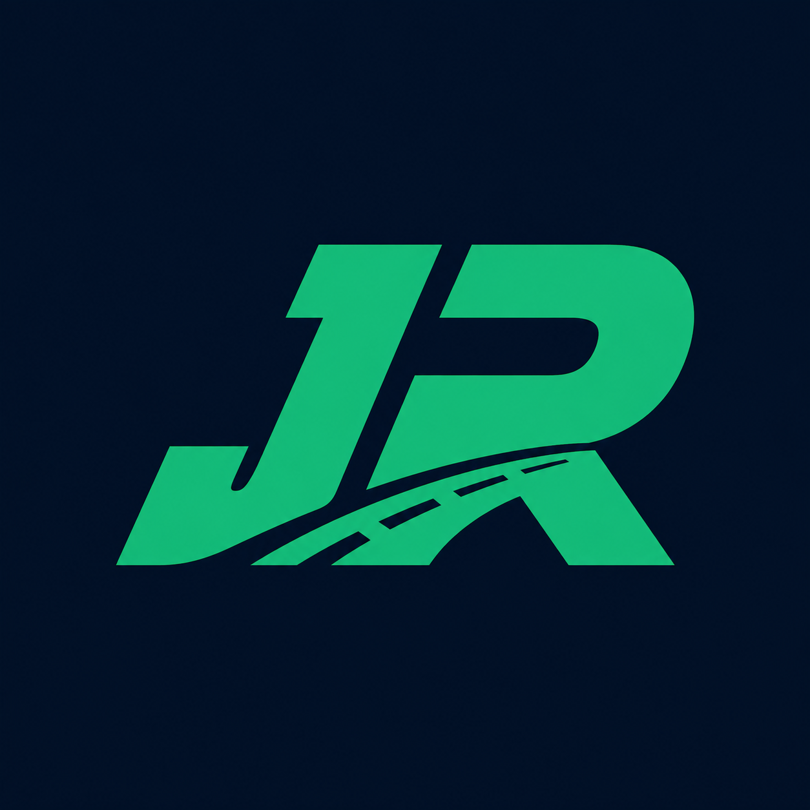

PARA QUEM ENTREGA
ANDROID
J.R Driver
Rotas, pacotes, pendências e resultados do dia.
J.R TECNOLOGIA LOGÍSTICA
Duas soluções desenvolvidas para organizar a logística dos dois lados da operação: o trabalho do motorista na rua e a gestão da empresa no escritório.
Rotas, pacotes, pendências e resultados do dia.
Entregas, equipe, receitas, despesas e relatórios.
✓ Produtos independentes, cada um preparado para seu público.
Nascido na operaçãoFunções pensadas para problemas reais.
Fácil de usarInformação organizada e decisões mais rápidas.
Evolução contínuaMelhorias guiadas por testes e feedback.
O Driver atende o profissional em campo; o Comercial atende a gestão da empresa.

Seu trabalho na rua, organizado em um só aplicativo.
Entregas e financeiro sob controle em um único sistema.
O J.R Driver reúne cadastro de pacotes, sequência de paradas, abertura de endereços no mapa, controle de entregas e resumo do dia em uma interface prática.
Organize paradas e acesse os destinos com menos perda de tempo.
Veja o que foi entregue, o que ficou pendente e o resultado do dia.
Participe da Rede J.R somente se quiser receber oportunidades.
— downloadscarregando contador
PARADAS24
CONCLUÍDAS18
Entrega concluídaCentro · 09:42
Próxima parada3,2 km · abrir no mapa
A versão Alpha é gratuita e instalada pelo APK oficial. O Android pode solicitar autorização para instalar pelo navegador.
Baixe o APKUse o botão oficial deste site.
AutorizePermita a instalação pelo navegador.
Abra e testeCadastre-se como entregador autônomo.
PAINEL DA EMPRESAVisão da operação
Um sistema independente para pequenas transportadoras e operações de entrega administrarem trabalho, equipe e dinheiro. A empresa cliente assume o protagonismo; a J.R fornece a tecnologia e o suporte.
Acompanhe entregas, clientes, parceiros, motoristas e movimentações.
Controle entradas, despesas e resultado operacional no mesmo ambiente.
Funciona localmente no Windows, com dados armazenados na própria máquina.
Produto independente do J.R DriverNão exige integração com o aplicativo, Firebase ou servidor externo para funcionar.
As soluções J.R nascem da observação de problemas reais: informações espalhadas, controles manuais, falta de visão financeira e dificuldade para acompanhar a operação.
Nosso propósito é transformar essa experiência em ferramentas simples, profissionais e acessíveis para motoristas e empresas.
Fale diretamente com a equipe responsável pelas soluções J.R.